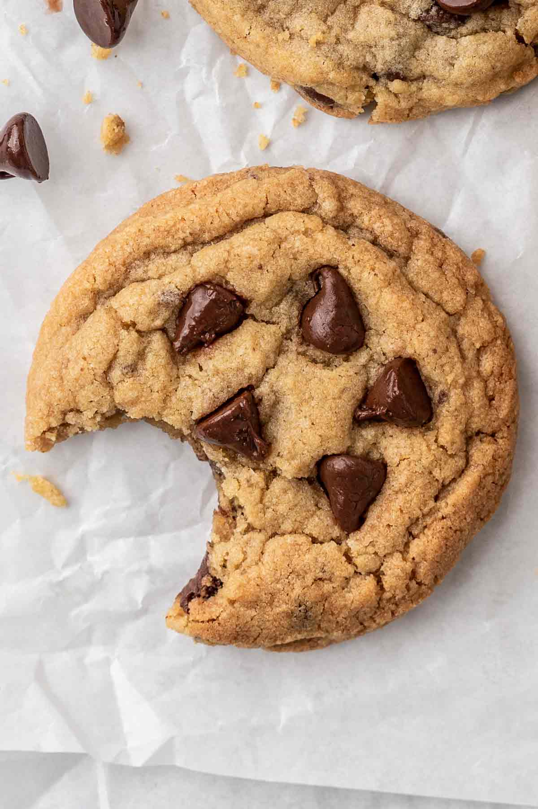

Cookies

Description
What is a Chocolate Chip Cookie? A chocolate chip cookie is a sweet baked treat that is recognized by its butter flavor and the inclusion of chocolate chips. Some variations can include nuts, oatmeal or raisins as well.
Ingredients
- Two sticks salted butter
- Two cups sugar
- Tablespoon molasses
- Two eggs
- Tablespoon vanilla extract
- Two teaspoons salt
- Teaspoon baking soda
- Two-and-a-half cups bread flour
- 12-ounce bag chocolate chips
Steps
- Pre-heat oven to 375 Fahrenheit.
- Melt the butter completely.
- Mix in sugar, molasses, eggs and vanilla until smooth.
- Mix in baking soda and two cups of flour.
- Add flour until dough appears wet but is not terribly sticky.
- Refridgerate dough for at least 30 min.
- Bake for 10-12 minutes.
- Enjoy!
Back to home